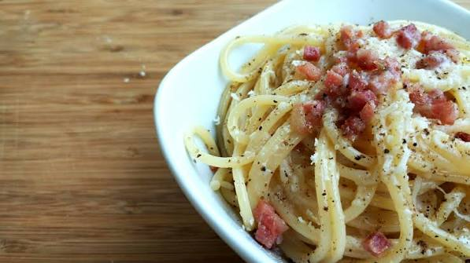

Spaghetti Carbonara Recipe

Description: Spaghetti Carbonara is a classic Italian pasta dish made with eggs,
cheese, pancetta, and pepper. It's creamy, comforting, and quick to prepare.
Ingredients:
- 12 oz spaghetti
- 4 oz pancetta or guanciale, diced
- 2 large eggs
- 1 cup grated Pecorino Romano cheese
- Freshly ground black pepper
- Salt, to taste
Steps:
- Cook spaghetti according to package instructions until al dente. Reserve 1 cup
of pasta water and drain the rest.
- In a large skillet, cook the pancetta over medium heat until crispy.
- In a bowl, whisk together the eggs and grated Pecorino Romano cheese.
- Remove the skillet from heat and add the cooked spaghetti to the pancetta.
- Quickly pour the egg and cheese mixture over the pasta, tossing to combine
and create a creamy sauce. Add reserved pasta water as needed to reach desired consistency.
- Season with freshly ground black pepper and salt to taste.
- Serve immediately, garnished with extra Pecorino Romano cheese if desired.